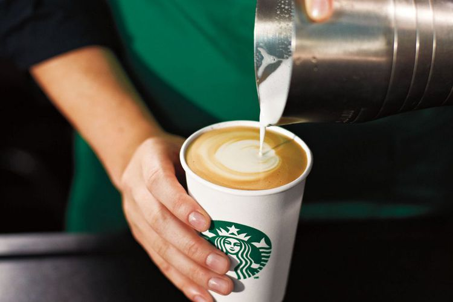

Hal yang Bisa Dilakukan di Starbucks Namun Sedikit yang Tahu
WISNUBRATA
KabarKabur.com - 24/09/2017, 12:45 WIB

Ilustrasi Starbucks(Armstrong Studios)
kabarkabur.com - Banyak di antara kita barangkali adalah pengunjung tetap kedai kopi Starbucks. Dan sebagian besar dari kita kemungkinan besar selalu memesan minuman yang sama. Alasannya karena sudah cocok dengan satu minuman, atau karena takut salah memesan minuman yang mungkin tidak disukai.
Beberapa orang lain ngopi di sana sebagai bagian dari gaya hidup, atau karena ingin mendapatkan koneksi internet dan mendapatkan suasana kerja yang nyaman dengan aroma harum kopi.Padahal ada banyak hal yang bisa dilakukan untuk mengeksplorasi apa saja yang ditawarkan gerai kopi asal Seattle tersebut. Nah, bila Anda penggemar kopi sejati dan ingin tahu lebih banyak soal minuman itu, berikut 3 hal yang bisa dilakukan di Starbucks, yang mungkin tidak Anda ketahui sebelumnya:Membawa Resep Sendiri Bila Anda sudah mencoba berbagai minuman yang ditawarkan di Starbucks tapi ingin merasakan racikan kopi lain yang tidak ada di dalam menu, maka Anda bisa memberikan resepnya pada barista untuk dibuatkan minuman tersebut.“Tidak semua minuman dituliskan dalam menu. Ada banyak menu istimewa yang tidak tertulis, namun kita tetap bisa memesannya,” ujar Yuti Resani, manager marketing communications dan CSR Starbucks Indonesia saat berbincang-bincang di Bali, Rabu (20/9/2017).“Selain itu kita bisa membawa sendiri resep kita dan minta dibuatkan oleh barista. Misalnya kita menemukan resep minuman kopi di internet, tunjukkan saja pada barista, ia akan membuatkannya,” lanjut Yuti, di sela-sela acara pembukaan gerai ke-300 Starbucks Indonesia, di Bandara I Gusti Ngurah Rai, Bali.Menggiling Biji KopiHal kedua yang bisa dilakukan adalah menggiling (grinding) biji kopi di semua gerai Starbucks. Tentu saja biji yang digiling adalah yang dibeli dari salah satu gerai berlambang mermaid atau putri duyung itu.Seperti kita tahu, banyak penggemar kopi lebih suka membeli kopi dalam bentuk biji, bukan bubuk. Kopi dalam bentuk biji akan lebih lama mempertahankan rasa dan aromanya dibanding kopi bubuk.Masalahnya, mereka yang membeli biji kopi kadang kala tidak memiliki alat penggiling. Nah, untuk menggilingnya, kita bisa pergi ke gerai Starbucks di mana saja, dan meminta agar biji kopi kita digiling sesuai ukuran yang kita inginkan.“Kadang-kadang orang membeli biji kopi, namun tidak ingin langsung menggilingnya atau hanya ingin menggiling sebagian saja. Nah, setiap kali ingin menggiling, ia bisa minta tolong ke Starbucks. Nanti barista akan menanyakan bagaimana ia biasanya meracik kopinya, lalu menyesuaikan ukuran gilingan dengan kebutuhan itu,” kata Yuti.Mencoba KopiHal ketiga, dan mungkin yang paling asyik adalah mencoba kopi atau coffee cupping di Starbucks tanpa dipungut biaya. Hal ini bisa dilakukan berkelompok, dengan meminta waktu pada barista untuk mencoba rasa dan menghirup aroma berbagai kopi yang ada di sana.Barista Starbucks, menurut Yuti, memiliki pengetahuan luas soal kopi. Mereka dengan senang hati akan menjelaskan soal kopi-kopi yang ada pada para pengunjung yang berminat. Lewat coffee cupping, orang akan lebih mengerti soal rasa dan flavour masing-masing kopi dan memiliki pilihan lebih luas saat ditawari berbagai jenis kopi.“Starbucks bukan sekedar menjual kopi, namun kami juga ingin memberi pengetahuan soal kopi, sehingga orang lebih mencintai minuman ini,” kata Yuti.Tertarik mencobanya? Tanyakan pada barista kapan mereka ada waktu untuk coffee cupping. Tentu kita sebaiknya memintanya saat mereka tidak sedang sibuk melayani pengunjung.
Penulis :Wisnubrata
Editor : Wisnubrata